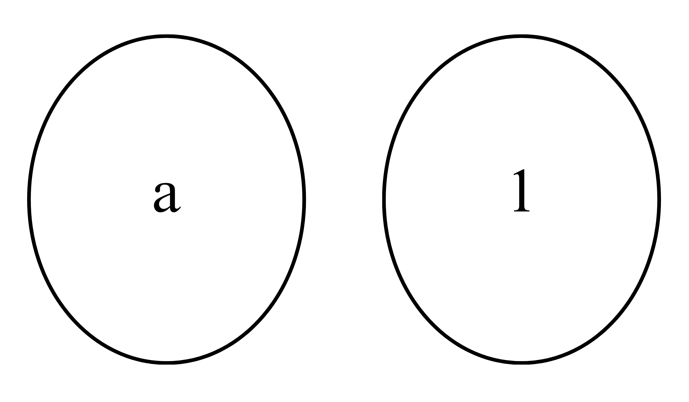
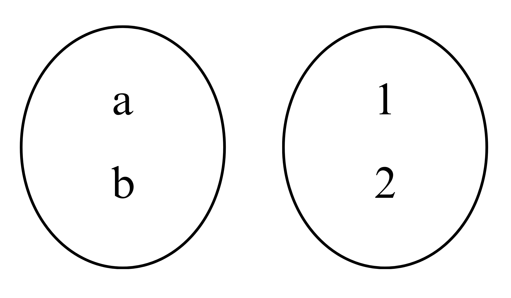
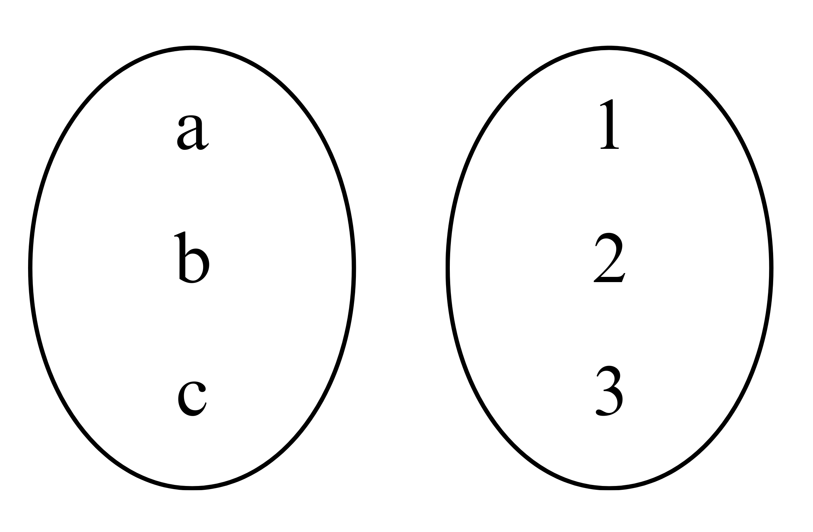

Apa itu fungsi satu-satu?
Fungsi satu-satu adalah fungsi yang memasangkan tepat satu untuk setiap anggota daerah asal maupun daerah kawan, fungsi satu -satu ini juga dikenal dengan korespondensi satu-satu Himpunan A dan himpunan B disebut berfungsi satu-satu apabila setiap anggota himpunan A berpasangan dengan tepat satu anggota himpunan B dan setiap anggota himpunan B berpasangan dengan tepat satu anggota himpunan A. Pada fungsi satu-satu ini, jumlah anggota himpunan A dan B haruslah sama.
Bagaimana menyatakan suatu fungsi satu-satu?
Misalkan:
Ada lima siswa telah memiliki nomor induk sekolah di SMP Semangat 45, kelima siswa
tersebut tentunya memiliki nomor induk khusus buat nomor induk masing-masing yang tidak
akan dimiliki oleh siswa lain, yakni seperti berikut.
Nomor induk Ahmad adalah 219,
Nomor induk As’ari adalah 279,
Nomor induk Tohir adalah 292,
Nomor induk Tauiq adalah 258,
Nomor induk Wati adalah 224,
Apabila A dinyatakan mewakili himpunan siswa, maka anggota himpunan A adalah {Ahmad,
As’ari, Tohir, Tauiq, Wati} dan anggota-anggota himpunan B adalah {219, 224, 258, 279, 292},
sehingga “nomor induk” merupakan relasi yang mungkin dari himpunan A ke himpunan B, dan
"nama pemilik nomor induk" merupakan relasi yang mugkin dari himpunan B ke himpunan A.

Berdasarkan gambar bagian kiri menunjukkan bahwa setiap elemen A memiliki satu pasangan
dengan setiap anggota B. Sehingga, "nomor induk" merupakan relasi dari himpunan A ke
B yang dapat disebut juga sebagai fungsi (pemetaan). Semua elemen himpunan B dapat
disebut sebagai pemetaan (bayangan) dari elemen himpunan A dan dipasangkan dengan
tepat satu oleh anggota himpunan A. Sedangkan yang terjadi pada gambar bagian kanan
merupakan kebalikannya. Pemetaan dua arah seperti yang ditunjukkan pada gambar diatas
dapat juga disebut sebagai fungsi satu-satu (korespondensi satu-satu).
Bagaimana menentukan banyaknya fungsi satu-satu?
Berikut ini cara untuk menentukan berapa banyaknya fungsi satu-satu dari dua buah himpunan.
Misal himpunan A ={a} dan B = {1}. Banyaknya fungsi satu-satu dari A ke B adalah 1.

Misal himpunan A ={a,b} dan B = {1,2}. Banyaknya fungsi satu-satu dari A ke B adalah 2.

Misal himpunan A ={a,b,c} dan B = {1,2,3}. Banyaknya fungsi satu-satu dari A ke B adalah 3.

Banyaknya fungsi satu-satu dari A ke B berkaitan erat dengan banyaknya anggota dari masing-masing
himpunan. Perhatikan tabel berikut!
| Banyaknya anggota himpunan A | Banyaknya anggota himpunan B | Banyaknya fungsi satu-satu |
| 1 | 1 | 1 |
| 2 | 2 | 2 = 1 × 2 |
| 3 | 3 | 6 = 1 × 2 × 3 |
| 4 | 4 | 24 = 1 × 2 × 3 × 4 |
| ... | ... | ... |
| m | n | 24 = 1 × 2 × 3 × ... × n |